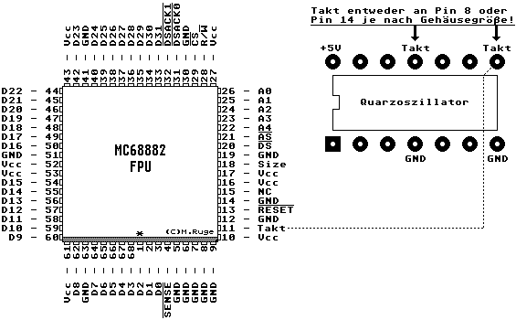

Previous
Next
TOC
Wer möchte, kann durchaus auch die FPU mit einem schnelleren Takt be-
treiben als die CPU, da das Interface zwischen den beiden ICs eh
asynchron ist und damit keine größeren Änderungen vorgenommen werden
müssen (ist von Motorola so dokumentiert worden)!
Einfach den Takt Pin der FPU vom Sockelkontakt isolieren und dort ei-
nen höheren Takt aus einem zusätzlichen Quarzoszillator einspeisen
oder den höheren Takt bspw. im Falcon030 vom Video- (25,175MHz) oder
DSP (32 MHz) Quarzoszillator abnehmen und an der FPU einspeisen.
Im TT030 gibt es keine höheren Taktfrequenzen als 32 MHz, hier ist
ein zusätzlicher Quarzoszillator zwingend notwendig.
Die +5V Spannungsversorgung kann man sich von einem TTL-IC in der
nähe der FPU holen oder man lötet gleich den Quarzoszillator hucke-
pack auf ein TTL-IC.
Das Taktsignal vom Quarzoszillator zum FPU Pin sollte nach möglich-
keit über ein sehr kurzes Kabel geführt werden um keine Einstrahlun-
gen auf das Taktsignal zu bekommen. Falls doch, kommt man nicht drum-
herum ein abgeschirmtes Kabel zu verwenden!
Wichtig, die vorhandene CPU kann man nicht beliebig übertakten, die
sicherste Methode ist es eine FPU einzubauen die für die erhöhte
Taktfrequenz vom Hersteller auch freigegeben worden ist:
MC68882FN16 ist für 16 MHz zugelassen
MC68882FN20 ist für 20 MHz zugelassen
MC68882FN25 ist für 25 MHz zugelassen
MC68882FN33 ist für 33 MHz zugelassen
MC68882FN40 ist für 40 MHz zugelassen
MC68882FN50 ist für 50 MHz zugelassen
MC68882FN66 ist für 66 MHz zugelassen

Kapitel Die Höhertaktung der 68882 FPU, Seite 2